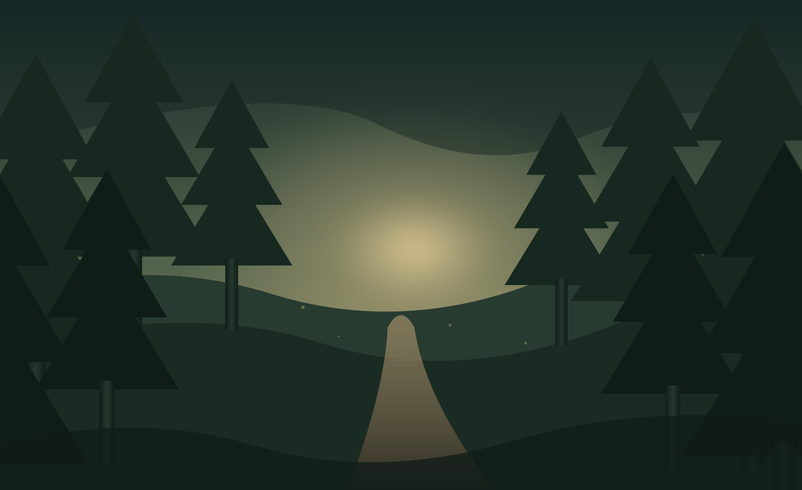

Siła niewiedzy
O ciekawości, która nie boi się powiedzieć: jeszcze nie wiem.
CIEKAWOŚĆ · ODKRYWANIE
TU ZACZYNA SIĘ NASZA ŚCIEŻKA
Czasem jest lasem, który pozwala myślom odetchnąć. Witaj w moim małym miejscu w sieci.
Poznaj moją opowieśćMiło, że tu jesteś.
To miejsce powstaje powoli — jak leśna ścieżka, którą wydeptuje się krok po kroku. Znajdziesz tu moje słowa, obserwacje, pytania i rzeczy, nad którymi warto się zatrzymać.
Nie chcę, żeby był to tylko zbiór wpisów. Wolę myśleć o tej stronie jak o polanie: można na chwilę przysiąść, rozejrzeć się i wrócić do świata z nową myślą.
Zajrzyj do moich myśliCisza nie zawsze jest brakiem — czasem jest miejscem wzrostu.Z LEŚNEGO NOTATNIKA
Ślady myśli
Kilka tematów, do których lubię wracać. Z czasem pojawią się tu kolejne opowieści i rozmowy.
O ciekawości, która nie boi się powiedzieć: jeszcze nie wiem.
CIEKAWOŚĆ · ODKRYWANIEO przestrzeni pomiędzy zadaniami, w której może pojawić się nowa myśl.
REFLEKSJA · OBECNOŚĆO tym, jak budować coś trwałego, nie tracąc po drodze ciekawości świata.
ROZWÓJ · TWORZENIENajnowsze ślady na polanie
Nowe wpisy pojawiają się tutaj automatycznie, gdy tylko trafią do repozytorium.
Szukam najnowszych wpisów…
Miejsce spotkań
Ta strona jest początkiem. Z czasem może stać się wspólną przestrzenią dla opowieści, projektów i myśli naszych małych, cyfrowych wędrowców.
Wróć na początek